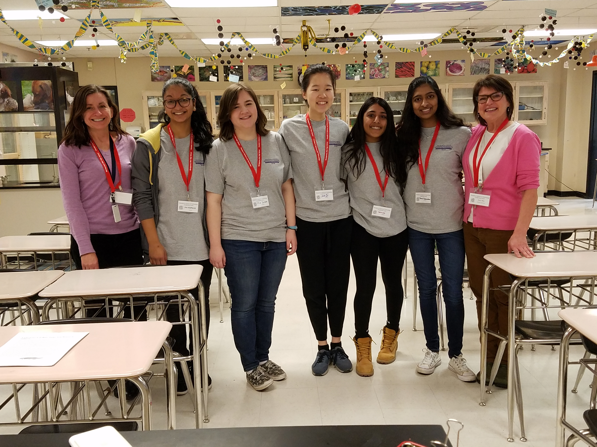
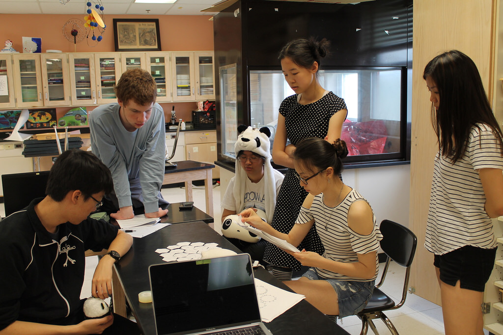
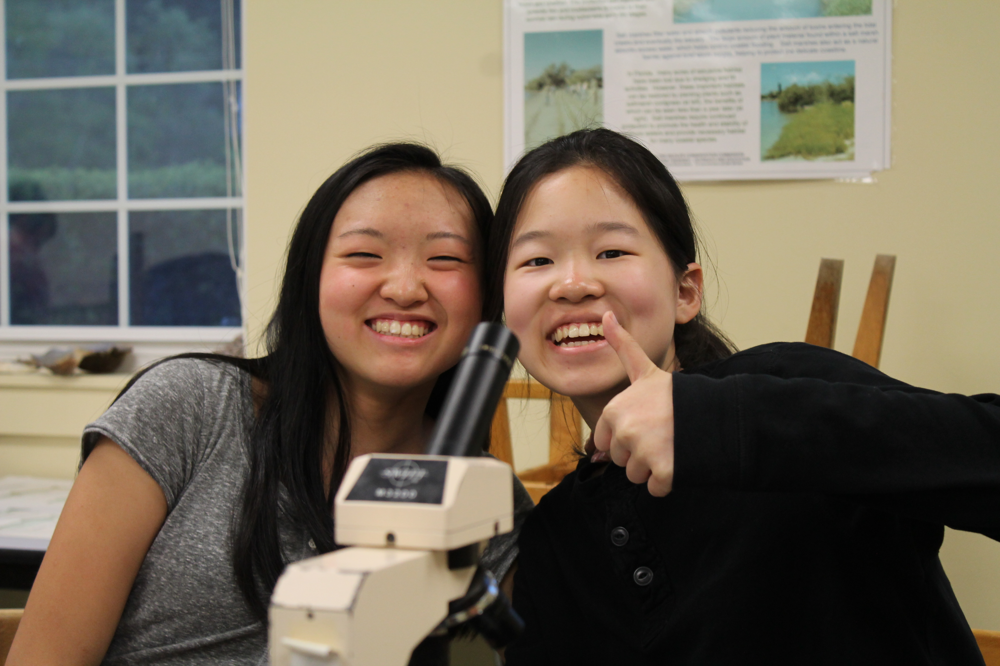

School
I’m a college sophomore at Carnegie Mellon University in the BXA program studying computer science and art with a concentration in electronic and time based media. I am interested in the intersection of art and technology.
I was a magnet student at Montgomery Blair High School, which means I got the amazing opportunity to take college-level science and math courses. I also love to act and started performing onstage in middle school continuing on into high school.

Performing as Cressida in Troilus and Cressida (2018)

Females in Science and Technology (FIST) Conference: In my junior year, I acted as a workshop presider for Blair’s annual FIST conference which encourages seventh graders from surrounding middle schools to learn and get excited about STEM. I taught them about zebrafish undergoing embryonic development.

Puzzling on during PuzzlePalooza IX

Exploring Wallops Island: One highlight of the magnet is the sophomore trip to the Chincoteague Bay Field Station. For three days, we learn about Chesapeake Bay ecology, converse with Captain Jimmy (a chincoteague local!) on a research vessel, visit Wallops Island, swim through a mud pit, and have fun!